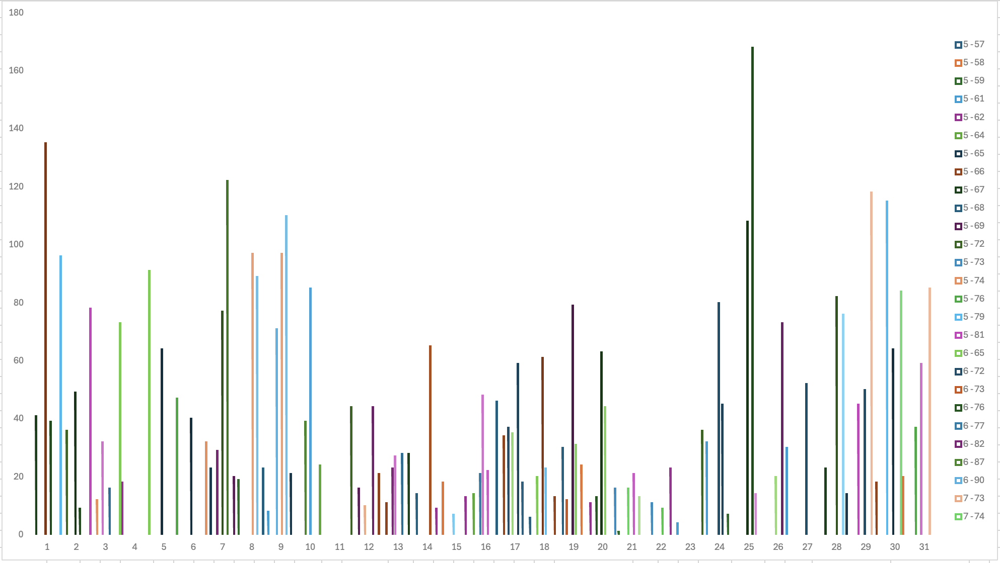

Airquality
I am using the air-quality dataset, which contains air quality measurements collected over several months, specifically from May to September. The dataset includes the following variables: Ozone, Solar.R (solar radiation), Wind (wind speed in miles per hour), Temp (temperature in degrees Fahrenheit), Month (ranging from 5 for May to 9 for September), and Day (ranging from 1 to 31).
Cleaning The Data
I used Excel to clean the data by removing all rows with NA values and performed an exploratory analysis to identify patterns, trends, and potential relationships between these variables over the specified months and days.
Ozone Histogram

The Ozone histogram has its highest values on the left and then curbs off to the right, it indicates a right-skewed distribution.
This means:
- Most ozone values are low, with a few much higher values creating a long tail on the right.
- The skewness could result from natural variability, pollution events, or weather conditions affecting ozone levels.
Scatter Plot Ozone vs Temperature
- A scatter plot of ozone (x-axis) vs. temperature (y-axis) with a slight positive correlation means that higher ozone levels tend to be associated with higher temperatures. However, the relationship is weak, suggesting other factors (like wind, humidity, or pollution) also affect ozone levels and temperature.
Pivot Table Average Ozones Per Day & Month (Redacted)

- The pivot table presents daily sums for multiple variables (Temperature, Wind, Solar Radiation, and Ozone) over several months (May to September). The days with the highest ozone averages are Day 25 in May (with an Ozone value of 5-65) and July (with an Ozone value of 7-74), with other notable days being Day 29 and Day 30 in May. The months with the highest ozone levels are May, which shows several days with high averages, and July, particularly on Days 25 and 29.
Pivot Chart Average Ozones Per Day & Month

Pivot Table of Variation in Solar Radiation and Temperature
- The pivot chart provide a visual representation of how these variables change over time. The histogram shows day-to-day variations in ozone levels, with the highest concentrations occurring in the summer months. Notably, there is a pronounced peak around July 25th, indicating exceptionally high ozone levels on that day. May and July both have elevated levels, with smaller peaks around May 29th and 30th, but July 25th stands out as the most significant. Overall, the chart confirms that ozone levels are highest in July, particularly around the 25th.

- The pivot table shows daily sums for Solar Radiation and Temperature over a month. There is noticeable daily variation, with high values on days like 18, 19, and 29, indicating intense sunlight and warmer temperatures, and lower values on days like 23 and 27, reflecting cooler conditions. The grand totals summarize the entire month, with 20,513 for Solar Radiation and 8,635 for Temperature. Overall, the table captures daily fluctuations in weather conditions.
Pivot Chart of Pivot Chart of Variation in Solar Radiation and Temperature

- The bar chart shows daily sums of Solar Radiation (blue) and Temperature (orange) over 31 days. High Solar Radiation is notable on days like 9, 13, 16, 18, 19, and 29, with values exceeding 1,000. Temperature values are generally lower, mostly below 400, with higher values on days like 9 and 18. There are significant day-to-day variations, with some days showing high Solar Radiation but lower temperatures (e.g., Day 13). The chart captures daily fluctuations and highlights days with extreme values.
Pivot Table

- The pivot table displays the average temperature (
Average of Temp) and ozone levels (Average of Ozone) for days labeled 5 to 9, showing average temperatures ranging from 66.46 to 83.88, with the highest temperatures recorded on days 7 and 8. Ozone levels vary significantly, from a low of 24.13 on Day 5 to a high of 60.00 on Day 8. Overall, the average temperature for the period is 77.79, and the average ozone level is 42.10, reflecting moderate temperatures with variable ozone levels across these days and highlighting daily fluctuations in both metrics.
Pivot Chart

- The bar chart illustrates the average temperature (in blue) and average ozone levels (in orange) for days 5 to 9, showing that temperatures remain relatively high throughout, ranging from around 66 on Day 5 to approximately 84 on Days 7 and 8. Ozone levels start low on Day 5 (around 24), rise significantly by Days 7 and 8 (around 59-60), and then decrease slightly on Day 9 (around 31). The chart suggests a potential correlation between higher temperatures and elevated ozone levels, as Days 7 and 8, which have the highest temperatures, also show the highest average ozone levels, indicating noticeable variability over the period.